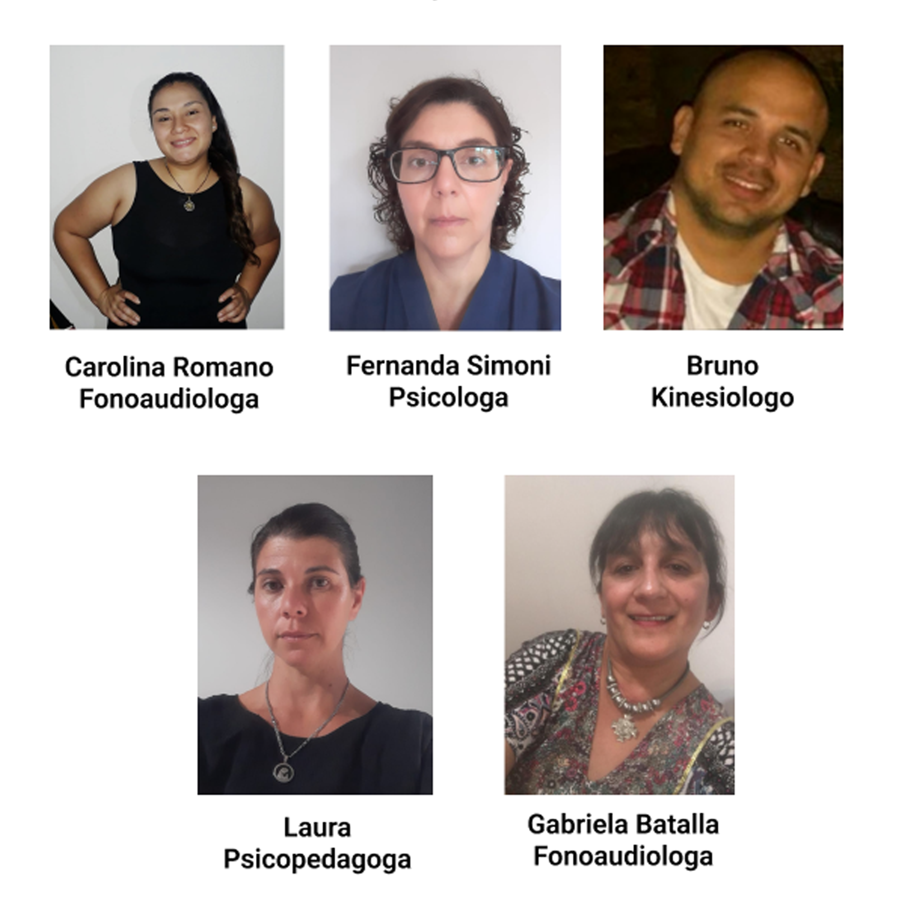

C.R.I.E.R. surge a partir de la idea de Florencia y Gabriela, socias fundadoras, quienes estudiaron juntas y conocieron lo que era el verdadero trabajo en equipo. A partir de esto, surgió la idea de armar un equipo interdisciplinario, basándose en la calidad humana, el trabajo en equipo y las ganas de crecer profesionalmente. Nuestro centro de rehabilitación funciona desde hace años y cuenta con profesionales destacados de cada área, brindando una atención única a cada paciente que lo requiera.
Nuestros Profesionales

Horarios
Lunes a viernes de 9 a 19 hs
Martes 09.30 a 12.00 hs y 16.30 a 19.00 hs
Jueves 09.30 a 12.00 hs y 16.30 a 19.00hs
crieryb@hotmail.com
Horarios
Lunes a viernes de 9 a 19 hs
Martes 09.30 a 12.00 hs y 16.30 a 19.00 hs
Jueves 09.30 a 12.00 hs y 16.30 a 19.00hs
crieryb@hotmail.com
Paraguay 1896 Yerba Buena, Tucumán - crieryb@hotmail.com